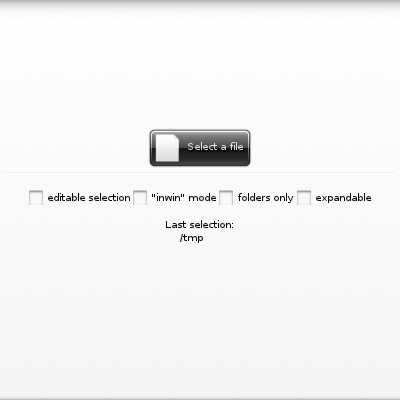
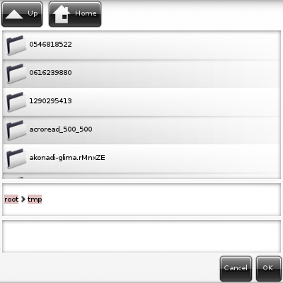

This code places an Elementary file selector button widget on a window, along with some other checkboxes and a text entry.
Those are there just as knobs on the file selector button's state and to display information from it.
Here's how we instantiate it:
elm_object_text_set(fs_bt, "Select a file");
@ EVAS_ASPECT_CONTROL_VERTICAL
Use all vertical container space to place an object, using the given aspect.
Definition: Evas_Common.h:377
void elm_box_pack_end(Elm_Box *obj, Efl_Canvas_Object *subobj)
Add an object at the end of the pack list.
Definition: elm_box_eo.legacy.c:57
void elm_fileselector_path_set(Evas_Object *obj, const char *_path)
Set, programmatically, the directory that a given file selector widget will display contents from.
Definition: elc_fileselector.c:2153
void elm_object_part_content_set(Evas_Object *obj, const char *part, Evas_Object *content)
Set the content on part of a given container widget.
Definition: elm_main.c:1562
Evas_Object * elm_icon_add(Evas_Object *parent)
Add a new icon object to the parent.
Definition: elm_icon.c:613
Eina_Bool elm_icon_standard_set(Evas_Object *obj, const char *name)
Set the icon by icon standards names.
Definition: elm_icon.c:885
EVAS_API void evas_object_show(Evas_Object *eo_obj)
Makes the given Evas object visible.
Definition: evas_object_main.c:1814
EVAS_API void evas_object_size_hint_aspect_set(Evas_Object *obj, Evas_Aspect_Control aspect, Evas_Coord w, Evas_Coord h)
Sets the hints for an object's aspect ratio.
Definition: evas_object_main.c:2581
Note that we set on it both icon and label decorations. It's set to list the contents of the "/tmp" directory, too, with elm_fileselector_button_path_set(). What follows are checkboxes to exercise some of its API functions:
elm_object_text_set(ck, "editable selection");
elm_object_text_set(ck, "\"inwin\" mode");
elm_object_text_set(ck, "folders only");
elm_object_text_set(ck, "expandable");
elm_object_text_set(lb, "Last selection:");
#define EINA_FALSE
boolean value FALSE (numerical value 0)
Definition: eina_types.h:533
Evas_Object * elm_check_add(Evas_Object *parent)
Add a new Check object.
Definition: efl_ui_check.c:516
void elm_check_state_set(Evas_Object *obj, Eina_Bool state)
Set the on/off state of the check object.
Definition: efl_ui_check.c:372
Evas_Object * elm_entry_add(Evas_Object *parent)
This adds an entry to parent object.
Definition: elm_entry.c:4184
void elm_entry_editable_set(Elm_Entry *obj, Eina_Bool editable)
Sets if the entry is to be editable or not.
Definition: elm_entry_eo.legacy.c:99
void elm_entry_line_wrap_set(Elm_Entry *obj, Elm_Wrap_Type wrap)
Set the line wrap type to use on multi-line entries.
Definition: elm_entry_eo.legacy.c:243
Eina_Bool elm_fileselector_expandable_get(const Evas_Object *obj)
Get whether tree view is enabled for the given file selector widget.
Definition: elc_fileselector.c:2140
Eina_Bool elm_fileselector_folder_only_get(const Evas_Object *obj)
Get whether folder-only view is set for a given file selector widget.
Definition: elc_fileselector.c:2065
Eina_Bool elm_fileselector_is_save_get(const Evas_Object *obj)
Get whether the given file selector is in "saving dialog" mode.
Definition: elc_fileselector.c:2032
Evas_Object * elm_label_add(Evas_Object *parent)
Add a new label to the parent.
Definition: elm_label.c:421
EVAS_API void evas_object_smart_callback_add(Evas_Object *eo_obj, const char *event, Evas_Smart_Cb func, const void *data)
Add (register) a callback function to the smart event specified by event on the smart object obj.
Definition: evas_object_smart.c:1040
The checkboxes will toggle whether the file selector button's internal file selector:
- must have an editable text entry for file names (thus, be in "save dialog mode")
- is to be raised as an "inner window" (note it's the default behavior) or as a dedicated window
- is to populate its view with folders only
- is to expand its folders, in its view, in place, and not repainting it entirely just with the contents of a sole directory.
The entry labeled "Last selection" will exercise the "file,chosen" smart event coming from the file selector button:
static void
{
const char *file = event_info;
if (file)
{
elm_object_text_set(entry, file);
printf("File chosen: %s\n", file);
}
else
printf("File selection canceled.\n");
}
#define EINA_UNUSED
Used to indicate that a function parameter is purposely unused.
Definition: eina_types.h:339
Efl_Canvas_Object Evas_Object
An Evas Object handle.
Definition: Evas_Common.h:185
Whenever you dismiss or acknowledges the file selector, after it's raised, the event_info string will contain the last selection on it (if any was made).
This is how the example, just after called, should look like:
Click on the file selector button to raise its internal file selector, which will be contained on an "inner window":
Toggle the "inwin mode" switch off and, if you click on the file selector button again, you'll get two windows, the original one (note the last selection there!)

and the file selector's new one

Play with the checkboxes to get the behavior changes on the file selector button. The respective API calls on the widget coming from those knobs where shown in the code already.
See the full source code for this example.